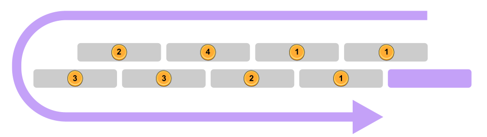

This puzzle consists of 8 mini-puzzles that use information hidden inside the game. Puzzlers are initially presented with 2 minipuzzles already unlocked, and gradually unlock more minipuzzles as they progress through the game.
A key observation to make is that each of the puzzles are themed around one of the 8 non-puzzle tabs in the game (see table below).
| Puzzle Title | Unlock Cost | Corresponding Game Tab |
|---|---|---|
| Assistance | Unlocked at start | Help |
| Headlines | Unlocked at start | Main |
| Automation | 1e8 Wariocoins | Autobuyers |
| 💩 | 1 Goomba | Options |
| Just Click It | 1e3 Goombas | Minigame |
| Drive and Derive | 1e7 Goombas | Upgrades |
| The 'Gram | 1e11 Goombas | Tasks |
| Feat | 1e60 Wariocoins | Achievements |
| Superfinale | 1e100 Wariocoins | N/A (meta) |
Solutions to each of the minipuzzles and the meta are below.
The last bullet point of the help tab contains the text:
Puzzlers may notice that there is hidden text at the bottom of the page:
The corrected version of this text contains an instruction (also hinted in flavortext): Here at the bottom of this tab lies confusingly pushed nonsense to maybe compare with highest line in help tab.
Puzzlers may notice that character lengths of each word are the same in the top and bottom line. Taking the letters in common yields the answer MACHTWO.
The Main tab features a news ticker featuring 10 headlines with bolded words that act as cryptic clues (see table below).
| News Ticker | Cryptic Answer | Cryptic Explanation |
|---|---|---|
| Aha! If you write a play that goes until a crazy act nine, it will become immemorial! (7) | ANCIENT | Anagrammed "act nine" |
| Ailment warning! If you explore unusual dales within these uncovered ruins, you'll end up with a body part missing! (8) | HEADLESS | Anagrammed dales inside (t)hes(e) |
| Alchemy really works! If you get original lead deposits at first, you'll end up with a precious metal! (4) | GOLD | get original lead deposits (first letters) |
| Behold! If you tarried a minute replacing tea, you'll end up happily wedded! (7) | MARRIED | tarried with M replacing T |
| Believe signs! If you search in accordance with prophecy, you'll find roughly half of people! (5) | WOMEN | w/ omen |
| Beware uncomfortable containers! If you're in an unloved Japanese box, your back will become crooked! (4) | BENT | bento - o |
| Build up event knowledge! If you have six unstarted news articles, you'll be unable to understand other people's perspectives! (5) | VIEWS | VI (Roman Num.) + (n)ews |
| Cheers! If you host a small party in the UK, it will become an anecdote! (5) | STORY | S(mall) Tory |
| Chic uprising! If you agree with the revolutionary stuff that some knights say, you'll be fashionable! (2) | IN | Ni backwards |
| Cool strategy tip! If you leave me at least confused, you'll get at least a draw! (9) | STALEMATE | Anagrammed "me at least" |
The cryptics can be further grouped into 3 sets based on the starting letter of the headlines (A, B, and C, respectively). Taking the answers of each of the 3 sets and sorting alphabetically yields another set of cryptics, which can be solved to reveal the final 3-word answer phrase: OLD WIVES TALE.
| Cryptic | Cryptic Answer | Cryptic Explanation |
|---|---|---|
| ANCIENT HEADLESS GOLD | OLD | (G)OLD |
| MARRIED WOMEN BENT VIEWS | WIVES | Anagrammed VIEWS |
| STORY IN STALEMATE | TALE | (S)TALE(MATE) |
The title and flavortext suggest that this minipuzzle is associated with the Autobuyers tab and has to do with prime factors. Puzzlers may notice that the costs of the autobuyers are conspicuously not in scientific notation (nor emoji notation, if toggled), suggesting their importance. Furthermore, each of the costs (pre-exponent) is a product of exactly two primes.
Using the prime number cipher (which maps the Nth prime to the Nth letter of the alphabet, also hinted by A2 to Z101) yields the phrase: ANSWER CONSCIENCE.
| Cost | Prime Factors | Letters |
|---|---|---|
| 86e1 | 2 x 43 | AN |
| 5561e2 | 67 x 83 | SW |
| 671e3 | 11 x 61 | ER |
| 235e4 | 5 x 47 | CO |
| 2881e5 | 43 x 67 | NS |
| 115e6 | 5 x 23 | CI |
| 473e7 | 11 x 43 | EN |
| 55e8 | 5 x 11 | CE |
The options tab allows puzzlers to toggle between Scientific notation and a strange, Emoji-based notation: 10💀 1🍆 100👪 100😠 1💀
Each emoji corresponds to a specific power of 10 (all multiples of 3), as listed below.
| Emoji | 1e? |
|---|---|
| 😠 | 3 |
| 🎂 | 6 |
| 🎄 | 9 |
| 💀 | 12 |
| 🍆 | 15 |
| 👪 | 18 |
| 🌈 | 21 |
| 💯 | 24 |
| 🍦 | 27 |
| ... | ... |
Converting 10💀 1🍆 100👪 100😠 1💀 to its corresponding powers of 10, we get: 1e13, 1e15, 1e20, 1e5, 1e12. Taking the exponent and indexing into the alphabet gives us the answer: MOTEL
The Minigame tab features a sort of click-a-mole game consisting of clicking a series of Wariocoins and question-mark boxes, with some notable pauses in between. The ordering of the objects that show up is the same every time, and when written out in Morse code (as hinted in the flavortext) with Wariocoins as dots and question-mark boxes as dash, they spell out SHALLOW.
The flavortext of the puzzle suggests that this puzzle corresponds to the Upgrades tab, which features 8 conspicuously named upgrades. Each name consists of a Mario Kart character with one letter off, followed by one of the higher-order derivatives of position. Sorting the mis-placed letters by the corresponding derivative order gives you the answer: UNEARTHLY.
| Character | Character (misspelled) | Derivative (in order) | Misplaced Letter |
|---|---|---|---|
| KOOPA | KOUPA | POSITION | U |
| LUIGI | LUNGI | VELOCITY | N |
| MARIO | MARIE | ACCELERATION | E |
| BOWSER | BOASER | JERK | A |
| GOOMBA | ROOMBA | SNAP | R |
| PEACH | TEACH | CRACKLE | T |
| YOSHI | HOSHI | POP | H |
| TOAD | LOAD | LOCK | L |
| WARIO | WAYIO | DROP | Y |
The Tasks tab contains 7 nonograms, each spelling out the letters of the answer: MANAGER.
This puzzle corresponds to the Achievements tab.
The flavortext provides somewhat cryptic instructions on how to solve this puzzle using only 4-letter words: “Look upon each word with four. With each line, pair ABCs then fill last word."
For each line in the Achievements table, every cell except one contains exactly 1 word of length four. Notably, the cell that does not contain a 4-letter word contains the word missing.
| FATE | SANS | BETA | BIOS | TENT | SOMA | TIME | ? |
| WISE | LEAF | LANE | DIAL | WOLF | DONT | ? | BEST |
| ? | HAND | GEEK | DIED | DUMP | FUNK | HELP | FILE |
Within each line, every letter appears twice in each position except for one (per position). Filling in that last letter gives you the missing word for each line.
As an example, in the first line, the first letters of the words given are F, S, B, B, T, S, T, ?. Everything pairs up except F, so the first letter of the missing word in the first line is F. The second letters are A, A, E, I, E, O, I, ?. Everything pairs up but O, so the second letter is O. Repeating for each position, and then doing the same for the other two lines, we get the answer: FOOTBALL GAME.
| FATE | SANS | BETA | BIOS | TENT | SOMA | TIME | FOOT |
| WISE | LEAF | LANE | DIAL | WOLF | DONT | BALL | BEST |
| GAME | HAND | GEEK | DIED | DUMP | FUNK | HELP | FILE |
This is the meta puzzle which makes use of the minipuzzle answers. 
The image indicates a sort order for the various game tabs (each corresponding to a minipuzzle), as well as a number per tab suggesting indexing into something. Simply indexing into the minipuzzle answers will not yield anything close to a word or a phrase (MFHLANAU).
The flavortext and the title suggest that the word “Super” is important. The key observation is that each of the minipuzzle answers corresponds to another word prefixed by Super (see below). By using the same ordering as above, and indexing into the post-super portion of the super-answers yields the thematic answer: 8BITCOIN.
| Tab | Minipuzzle | Answer | Super-answer | Index | Extracted Letter |
|---|---|---|---|---|---|
| Options | 💩 | MOTEL | SUPER8 | 1 | 8 |
| Achievements | Feat | FOOTBALLGAME | SUPERBOWL | 1 | B |
| Help | Assistance | MACHTWO | SUPERSONIC | 4 | I |
| Main | Headlines | OLDWIVESTALE | SUPERSTITION | 2 | T |
| Minigame | Just Click It | SHALLOW | SUPERFICIAL | 3 | C |
| Autobuyers | Automation | CONSCIENCE | SUPEREGO | 3 | O |
| Tasks | The 'Gram | MANAGER | SUPERVISOR | 2 | I |
| Upgrades | Drive and Derive | UNEARTHLY | SUPERNATURAL | 1 | N |
Note: Both EBITCOIN and EIGHTBITCOIN would have yielded a partial correctness response: “Close! Wario prefers not to spell out numbers.”
The initial version of Huntinality did not feature a 3rd round and concluded with the Brothers meta. By early March, we had written about 70% of all of our puzzles and felt confident enough to start thinking about adding either a meta-meta-puzzle or a runaround-style series of minipuzzles that was hopefully fun, unique, and exciting. We eventually settled on the latter, with the story being that Waluigi’s game had grown out of control and Wario would have to save Waluigi from himself.
Given that one of our writers (Dan) was a domain expert in incremental games, it seemed appropriate to frame this series of minipuzzles inside an incremental game. The flavor text for the meta was originally a lot less direct, but we wanted to both discourage looking into the characters from the previous puzzles and make the (super)finale a bit softer. We wanted Round 3 to be mostly fun and didn't want what were probably fatigued solvers to get too stuck at the final hurdle. Ultimately, the puzzle ended up being a bit more substantial than a runaround, but we hope that teams found it fun nonetheless.
The Wariocoins leaderboard was added just a week or two before the hunt. We thought it would be a fun addition to give something to do for some of the early finishers of the hunt. The game is designed such that making progress past 1e200 becomes extremely time consuming. Given the number of teams far past this mark, we are not sure whether to feel happy about the popularity of the game or concerned that we have very clearly contributed to loss of real world productivity.
Dan wrote a blog post going into gory details about some aspects of this puzzle here